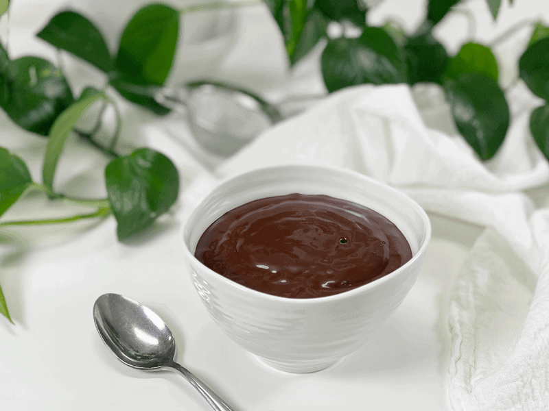
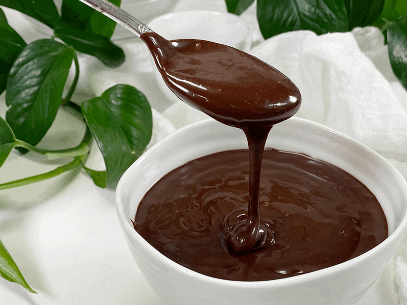
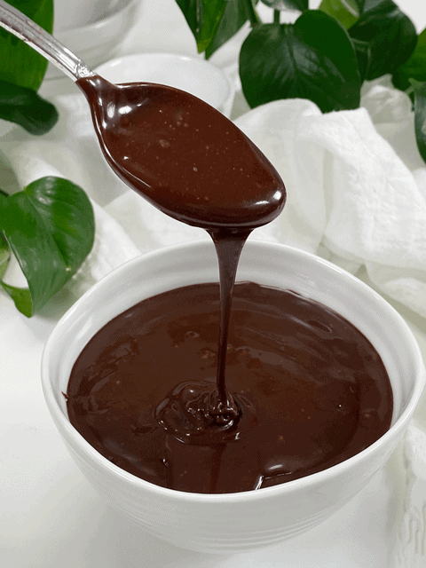

Chocolate Ganache Frosting
The primary requirement in making this luscious Chocolate Ganache Frosting is to have a willing participant who will lick the spoon and bowl clean! Ganache is typically a mixture of chocolate and cream, used to make truffles and other chocolate candies, or as a filling for cakes and pastries. But this recipe is dairy-free!

The texture of ganache depends on the temperature of it. It is soft and is relatively liquid at room temperature, suitable for drizzling over desserts. Once chilled, it creates a “firm” ganache that has the consistency of thick paste, which is perfect for frosting cakes. As if firms up, it creates a smooth, glossy look, which is just gorgeous for presentations. I tested this recipe in the freezer. Interestingly enough, it doesn’t freeze solid. So, this is a great “staple” recipe that you can pre-make and keep in the freezer. I have also taken the “frozen” ganache, and with a small cookie scoop, I have made chocolate ganache balls to use in truffle recipes.

Here is a fun treat just for you, for all the hard work you put into making delicious and nutritious foods for your family. After removing the ganache from the blender, pour some almond milk into the blender carafe and blend until the milk cleans the container. Once you hit the “stop” button, you will have a delicious glass of chocolate milk! I hope you enjoy this simple recipe. blessings, amie sue

Ingredients:
Yields 1 cup
- 3/4 cup (235 g) maple syrup
- 3/4 cup (67 g) raw cacao powder
- 1/3 cup (70 g) raw cold-pressed coconut oil, melted
- 1/8 tsp (1 g) Himalayan pink salt
Preparation:
- In a high powered blender, combine the sweetener, raw cacao powder, coconut oil, and salt. Process until smooth.
- Important tip – make sure all of the ingredients are at room temp. I tend to store my maple syrup in the fridge and if it is cold, it will cause the ganache to thicken too much too fast in the blender. This happens because the coconut oil, which should be melted, firms up when it comes in contact with cold ingredients.
- Stop occasionally to scrape down the sides of the blender jar with a rubber spatula.
- I know it is done when the texture turns glossy.
- Store in a glass container in the fridge.
- It is great to not only use on cakes but also on cookies, as a dipping sauce for apples … oh come on, do I even have to offer ideas as to what to do with chocolate! lol
- The ganache will keep 2-3 weeks in the fridge and even longer in the freezer. It won’t freeze solid.
© AmieSue.com